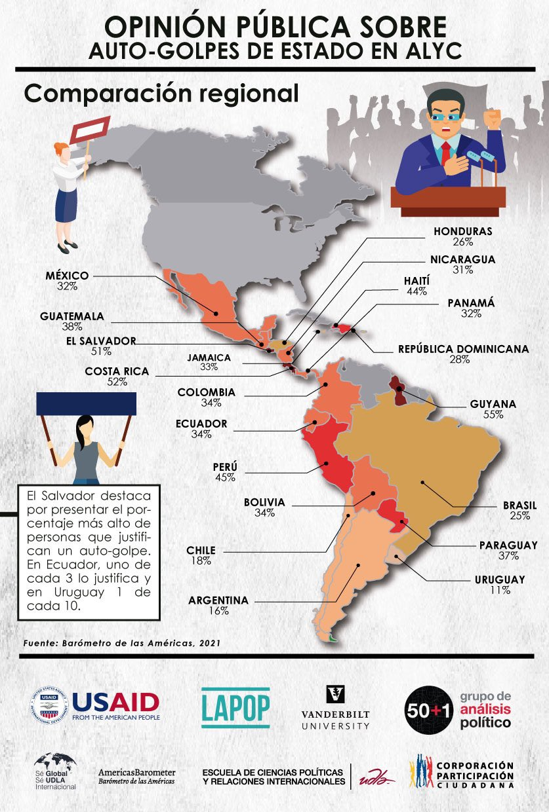
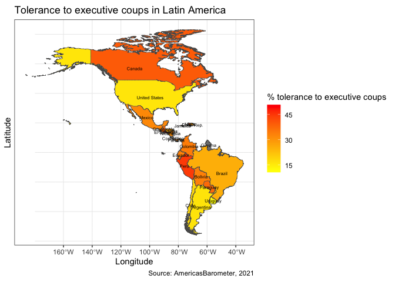

Introduction
In this section, we will introduce a very used tool nowadays:
presentation of data in maps. We will see a way to calculate average or
percentages of some variable of interest and present variation by
country in a map with different colors of a palette.
An example of this type of figures is presented in this tweet
that LAPOP´s research affiliate in Ecuador Participación
Ciudadana publishes.

This map shows the percentage of citizens that justifies an executive
coup in each country using the 2021 round of the AmericasBarometer. A
more intense red means a higher percentage and a pastel color indicates
a lower percentage.
In this section, we will se how to replicate this type of map, for
which we have to produce information form the dataset of the
AmericasBarometer.
About the dataset
The data we are going to use should be cited as follows: Source:
AmericasBarometer by the Latin American Public Opinion Project (LAPOP),
wwww.LapopSurveys.org. You can download the data freely here.
It is recommended to clean the Environment before starting this
section. In this document, a database in RData format is again loaded.
This format is efficient in terms of storage space. This database is
hosted in the “materials_edu” repository of the LAPOP account on GitHub.
Using the rio library and the import command,
you can import this database from this repository, using the following
code. In this code, we do not elimiate observations from Canada or the
United States, countries that do not have information in the map, but
that have data about executive coups in the dataset.
library(rio)
lapop21 = import("https://raw.github.com/lapop-central/materials_edu/main/lapop21.RData")
To reproduce the map, we have to calculate the percentage that
justifies an executive coup by country. Figure 1.7 of the 2021 report The
Pulse of Democracy shows this information.

In the section about confidence
intervals we see how to build this information using the 2021
dataset of the AmericasBarometer.
Preparing the data
The variable to replicate this figure is “jc15a” that is worded: Do
you believe that when the country is facing very difficult times it is
justifiable for the president of the country to close the
Congress/Parliament and govern without Congress/Parliament? The options
to answer are:
Yes, it is justified
No, it is not justified
To calculate the percentage, we have to transform the variable in
such a way that those who justify to close the congress are assigned a
value of 100 and those who do not, the value of 0. This transformation
is saved in a new variable “jc15ar”.
lapop21$jc15ar = car::recode(lapop21$jc15a, "1=100; 2=0")
table(lapop21$jc15ar)
##
## 0 100
## 17360 6951
Then, we have to calculate the percentage of people who tolerate an
executive coup for each country. When we load the dataset of the
AmericasBarometer, variables are generally load as type “numeric” (num
in the language of R).
To work with this variable, we have to transform the variable “pais”
as a categorical variable (factor in the language of R). We do this with
the command as.factor. We then label this variable with the
command levels.
lapop21$pais = as.factor(lapop21$pais)
levels(lapop21$pais) = c("Mexico", "Guatemala", "El Salvador", "Honduras",
"Nicaragua","Costa Rica", "Panama", "Colombia",
"Ecuador", "Bolivia", "Peru", "Paraguay", "Chile",
"Uruguay", "Brazil", "Argentina", "Dom. Rep.",
"Haiti", "Jamaica", "Guyana","United States", "Canada")
table(lapop21$pais)
##
## Mexico Guatemala El Salvador Honduras Nicaragua
## 2998 3000 3245 2999 2997
## Costa Rica Panama Colombia Ecuador Bolivia
## 2977 3183 3003 3005 3002
## Peru Paraguay Chile Uruguay Brazil
## 3038 3004 2954 3009 3016
## Argentina Dom. Rep. Haiti Jamaica Guyana
## 3011 3000 3088 3121 3011
## United States Canada
## 1500 2201
Executive coups by country
In R there are several ways to reach the same results. To calculate
the percentage of people who justify an executive coup, we follow the
same procedure when we calculate confidence intervals. We use the
library Rmisc and the command group.CI. We
save this infomatiomn in a table “coup”.
library(Rmisc)
## Loading required package: lattice
## Loading required package: plyr
coup = group.CI(jc15ar~pais, lapop21)
coup
The object “coup” save the information of the mean (it is, the
percentage) of people who justify an executive coup by country.
Other option is to use the command compmeans from the
library descr. It calculates the mean, the number of
observations and the standard deviation of a variable by groups of other
variable. It also allows to make calculation including survey
weights.
These calculations are saved in a data frame “table” with the command
as.data.frame. Then, we label the columns with the command
colnames and we include a column with the names of
countries and, finally, we delete the last row, where the mean for the
total is calculated. We do not require this information.
This procedure includes rows for countries where there is no data,
such as Costa Rica and Guyana.
library(descr)
table = as.data.frame(
compmeans(lapop21$jc15ar, lapop21$pais, lapop21$weight1500, plot=FALSE))
## Warning in compmeans(lapop21$jc15ar, lapop21$pais, lapop21$weight1500, plot =
## FALSE): 40056 rows with missing values dropped
varnames = c("mean_coup", "n_golpe", "sd_golpe")
colnames(table) = varnames
table$country = row.names(table)
table = table[-23, ]
We need to add a column that allows to merge of data from “table”
with the vectorial data to produce a map. We call this variable
“OBJECTID” and it has a code that we see later in the vectorial files of
maps, but it follows an alphabetical order. After including this
variable, we sort “table” from lower to higher in “OBJECTID”. With this
sorting, countries are in alphabetical order.
We see in the code lines that start with #. If we delete #, we
include these lines of code and we have all countries in America
(including Barbados, Bahamas, Belice, Graneda, Suriname, among others)
in alphabetical order. We maintain # because these countries are not
included in the 2021 round of the AmericasBarometer.
However, we will see that we are going to have vectorial data for
these countries.
table$OBJECTID = NA
table = within(table, {
OBJECTID[country=="Argentina"] = 1
# OBJECTID[country=="Barbados"]= 2
# OBJECTID[country=="Bahamas"]= 3
# OBJECTID[country=="Belice"]=4
OBJECTID[country=="Bolivia"]=5
OBJECTID[country=="Brazil"]=6
OBJECTID[country=="Canada"]=7
OBJECTID[country=="Chile"]=8
OBJECTID[country=="Colombia"]=9
OBJECTID[country=="Costa Rica"]=10
OBJECTID[country=="Dominica"]=11
OBJECTID[country=="Dom. Rep."]=12
OBJECTID[country=="Ecuador"]=13
OBJECTID[country=="El Salvador"]=14
# OBJECTID[country=="Granada"]=15
OBJECTID[country=="Guatemala"]=16
OBJECTID[country=="Guyana"]=17
OBJECTID[country=="Haiti"]=18
OBJECTID[country=="Honduras"]=19
OBJECTID[country=="Jamaica"]=20
OBJECTID[country=="Mexico"]=21
#OBJECTID[country=="Surinam"]=22
OBJECTID[country=="Nicaragua"]=23
OBJECTID[country=="Paraguay"]=24
OBJECTID[country=="Peru"]=25
OBJECTID[country=="Panama"]=26
#OBJECTID[country=="San Cristobal and Nieves"]=27
#OBJECTID[country=="Saint Lucia"]=28
#OBJECTID[country=="Trinidad and Tobago"]=29
OBJECTID[country=="Uruguay"]=30
#OBJECTID[country=="Saint Vicente and the Granedinas"]=31
#OBJECTID[country=="Venezuela"]=32
OBJECTID[country=="United States"]=33
})
table = table[order(table$OBJECTID),]
Vector maps
Files to produce maps are vector layers in EESRI Shapefiles format
(*.shp). There are several repositories in the web where we can find the
required files to produce maps. For example, This web
has the layers for America as a free download.
After we download and unzip this information, it creates a folder
with several files. All these files are needed to create a map and we
have to copy them in our working directory. From these files, the vector
layer that draw the map is called “America.shp”.
There are several ways to read vector data in R. One of them is the
library sf. This library includes the command
st_read that allows to read this information and to work
with this data in ggplot. We activate the library and use
the command st_read to load vector information in R. We
save this information in an object “al”. This object includes a table
with 53 observations and two variables. The 53 observations are all
countries in the Americas, that includes, for example, Aruba, Antigua
and Barbuda, etc. The first columns includes the name of countries and
the second column saves the geometry to draw a map.
library(sf)
## Linking to GEOS 3.11.0, GDAL 3.5.3, PROJ 9.1.0; sf_use_s2() is TRUE
al = st_read("Americas.shp")
## Reading layer `Americas' from data source
## `/Users/Arturo/Documents/GitHub/BarometroEdu_Web_Eng/Americas.shp'
## using driver `ESRI Shapefile'
## Simple feature collection with 53 features and 1 field
## Geometry type: MULTIPOLYGON
## Dimension: XY
## Bounding box: xmin: -186.5396 ymin: -58.49861 xmax: -12.15764 ymax: 83.6236
## Geodetic CRS: WGS 84
Because the 2021 round of the AmericasBarometer does not include
information for all these countries, we have to delete observations of
these countries not required.
al = al[-c(1, 2, 4, 5, 6, 7, 8, 13, 16, 17, 21, 22, 23, 24, 25, 31, 32, 34, 39, 40, 41, 42, 43, 44, 45, 47, 48, 49, 50, 51, 52), ]
In this way, the object “al” has the same list of countries that are
in “table”, which are the countries in the AmericasBarometer.
Following the same procedure as with the object “table”, we have to
add a column “OBJECTID” to “al”. Because this column is going to
coincide with the column in “table”, we can do a merge. Again, this
chunk includes lines of code with # for countries that are not in the
AmericasBarometer.
al$OBJECTID = NA
al = within(al, {
OBJECTID[COUNTRY=="Argentina"] = 1
# OBJECTID[COUNTRY=="Barbados"]= 2
# OBJECTID[COUNTRY=="Bahamas"]= 3
# OBJECTID[COUNTRY=="Belice"]=4
OBJECTID[COUNTRY=="Bolivia"]=5
OBJECTID[COUNTRY=="Brazil"]=6
OBJECTID[COUNTRY=="Canada"]=7
OBJECTID[COUNTRY=="Chile"]=8
OBJECTID[COUNTRY=="Colombia"]=9
OBJECTID[COUNTRY=="Costa Rica"]=10
# OBJECTID[COUNTRY=="Dominica"]=11
OBJECTID[COUNTRY=="Dominican Republic"]=12
OBJECTID[COUNTRY=="Ecuador"]=13
OBJECTID[COUNTRY=="El Salvador"]=14
# OBJECTID[COUNTRY=="Granada"]=15
OBJECTID[COUNTRY=="Guatemala"]=16
OBJECTID[COUNTRY=="Guyana"]=17
OBJECTID[COUNTRY=="Haiti"]=18
OBJECTID[COUNTRY=="Honduras"]=19
OBJECTID[COUNTRY=="Jamaica"]=20
OBJECTID[COUNTRY=="Mexico"]=21
#OBJECTID[COUNTRY=="Surinam"]=22
OBJECTID[COUNTRY=="Nicaragua"]=23
OBJECTID[COUNTRY=="Paraguay"]=24
OBJECTID[COUNTRY=="Peru"]=25
OBJECTID[COUNTRY=="Panama"]=26
#OBJECTID[COUNTRY=="San Cristobal y Nieves"]=27
#OBJECTID[COUNTRY=="Santa Lucía"]=28
#OBJECTID[COUNTRY=="Trinidad y Tobago"]=29
OBJECTID[COUNTRY=="Uruguay"]=30
#OBJECTID[COUNTRY=="San Vicente y las Granadinas"]=31
#OBJECTID[COUNTRY=="Venezuela"]=32
OBJECTID[COUNTRY=="United States"]=33
})
al = al[order(al$OBJECTID),]
We are going to join the information from “al” and “coup” in a new
object “al_data”. We can do this with the command
left_join, part of the tidyverse. We indicate that we want
to add data from “table” to the object “al”. The variable “OBJECTID”
works as the variable to join files by defect.
library(tidyverse)
## ── Attaching packages ─────────────────
## ✔ ggplot2 3.4.0 ✔ purrr 0.3.5
## ✔ tibble 3.1.8 ✔ dplyr 1.0.10
## ✔ tidyr 1.2.1 ✔ stringr 1.5.0
## ✔ readr 2.1.3 ✔ forcats 0.5.2
## ── Conflicts ──────────────────────────
## ✖ dplyr::arrange() masks plyr::arrange()
## ✖ purrr::compact() masks plyr::compact()
## ✖ dplyr::count() masks plyr::count()
## ✖ tidyr::expand() masks Matrix::expand()
## ✖ dplyr::failwith() masks plyr::failwith()
## ✖ dplyr::filter() masks stats::filter()
## ✖ dplyr::id() masks plyr::id()
## ✖ dplyr::lag() masks stats::lag()
## ✖ dplyr::mutate() masks plyr::mutate()
## ✖ tidyr::pack() masks Matrix::pack()
## ✖ dplyr::rename() masks plyr::rename()
## ✖ dplyr::summarise() masks plyr::summarise()
## ✖ dplyr::summarize() masks plyr::summarize()
## ✖ tidyr::unpack() masks Matrix::unpack()
al_data = al %>%
left_join(table)
## Joining, by = "OBJECTID"
We have the vector data to draw the map and the data from the
AmericasBarometer in this new object.
Map for tolerance to executive coups by country
As we indicate, the library ggplot2 can work with vector
objects. We specify in the command ggplot that we are going
to use data=al_data and then, we use the command
geom_sf to specify the variable we want to show.
We are going to start with a basic map. We use the specification
fill="skyblue3" in the command geom_sf to
indicate that all countries have to be colored with color blue. Also, we
specify that country contour have to be colored with color black with
color="black".
library(ggplot2)
ggplot(data=al_data) +
geom_sf(fill="skyblue3", color="black")

Now, we are going to draw data from the variable tolerance to
executive coups. Again, we specify in ggplot that data
comes from “al_data”. Then, we specify that colors for each country are
defined by the variable “mean_coup” in
geom_sf(aes(fill= mean_coup)). To create a map where we use
a color gradient to indicate a higher or lower percentage, we use the
command scale_fill_gradient where we define the colors for
lower values and higher values in the gradient. In our case, we use the
color “yellow” to show the lower percentages and the color “red” to show
the higher percentages.
We add the command geom_sf_text where the specification
aes(label=pais) indicates we want to add text with the
labels of each country. We specify the size of the text with
size=2. Finally, we define the title of this figure, the
caption, the name of X axis and the legend with labs. We
choose a basic theme of black and whites to this figure with
theme_bw().
ggplot(al_data) +
geom_sf(aes(fill = mean_coup))+
scale_fill_gradient(low = "yellow", high = "red")+
geom_sf_text(aes(label=country), size=2)+
labs(title = "Tolerance to executive coups in Latin America",
caption = "Source: AmericasBarometer, 2021",
x="Longitude", y="Latitude",
fill = "% tolerance to executive coups")+
theme_bw()
## Warning in st_is_longlat(x): bounding box has potentially an invalid value range
## for longlat data
## Warning in st_point_on_surface.sfc(sf::st_zm(x)): st_point_on_surface may not
## give correct results for longitude/latitude data

This code defines breaks in colors in 10 jumps by defect. If we want
to change this breaks, we can use the specification
break=c(…) within scale_fill_gradient.
ggplot(al_data) +
geom_sf(aes(fill = mean_coup))+
scale_fill_gradient(low = "yellow", high = "red", breaks=c(15, 30, 45, 60))+
geom_sf_text(aes(label=country), size=2)+
labs(title = "Tolerance to executive coups in Latin America",
caption = "Source: AmericasBarometer, 2021",
x="Longitude", y="Latitude",
fill = "% tolerance to executive coups")+
theme_bw()
## Warning in st_is_longlat(x): bounding box has potentially an invalid value range
## for longlat data
## Warning in st_point_on_surface.sfc(sf::st_zm(x)): st_point_on_surface may not
## give correct results for longitude/latitude data

Summary
In this section, we download vector data for the Americas and we
merge data from the AmericasBarometer to draw a map. This type of map
are called “choropleth”. It shows a color gradient depending on the
value of a variable.
In our case, we draw a map to show a color gradient for the tolerance
to executive coups in Latin America.
LS0tCnRpdGxlOiAiTWFwcyB1c2luZyB0aGUgQW1lcmljYXNCYXJvbWV0ZXIiCm91dHB1dDoKICBodG1sX2RvY3VtZW50OgogICAgdG9jOiB0cnVlCiAgICB0b2NfZmxvYXQ6IHRydWUKICAgIGNvbGxhcHNlZDogZmFsc2UKICAgIG51bWJlcl9zZWN0aW9uczogZmFsc2UKICAgIHRvY19kZXB0aDogMQogICAgY29kZV9kb3dubG9hZDogdHJ1ZQogICAgdGhlbWU6IGZsYXRseQogICAgZGZfcHJpbnQ6IHBhZ2VkCiAgICBzZWxmX2NvbnRhaW5lZDogbm8KICAgIGtlZXBfbWQ6IHllcwplZGl0b3Jfb3B0aW9uczogCiAgbWFya2Rvd246IAogICAgd3JhcDogc2VudGVuY2UKLS0tCgpgYGB7ciBzZXR1cCwgaW5jbHVkZT1GQUxTRX0Ka25pdHI6Om9wdHNfY2h1bmskc2V0KGVjaG8gPSBUUlVFKQpgYGAKCiMgSW50cm9kdWN0aW9uCgpJbiB0aGlzIHNlY3Rpb24sIHdlIHdpbGwgaW50cm9kdWNlIGEgdmVyeSB1c2VkIHRvb2wgbm93YWRheXM6IHByZXNlbnRhdGlvbiBvZiBkYXRhIGluIG1hcHMuCldlIHdpbGwgc2VlIGEgd2F5IHRvIGNhbGN1bGF0ZSBhdmVyYWdlIG9yIHBlcmNlbnRhZ2VzIG9mIHNvbWUgdmFyaWFibGUgb2YgaW50ZXJlc3QgYW5kIHByZXNlbnQgdmFyaWF0aW9uIGJ5IGNvdW50cnkgaW4gYSBtYXAgd2l0aCBkaWZmZXJlbnQgY29sb3JzIG9mIGEgcGFsZXR0ZS4KCkFuIGV4YW1wbGUgb2YgdGhpcyB0eXBlIG9mIGZpZ3VyZXMgaXMgcHJlc2VudGVkIGluIHRoaXMgW3R3ZWV0XShodHRwczovL3R3aXR0ZXIuY29tL3BhcnRpY2lwYWNpb25wYy9zdGF0dXMvMTUyNDQ3ODUxMTc4ODA1MjQ4MD9zPTIxJnQ9WGEzcFpMa2wzNDlOemhnbmVKaGZQUSkgdGhhdCBMQVBPUMK0cyByZXNlYXJjaCBhZmZpbGlhdGUgaW4gRWN1YWRvciBbUGFydGljaXBhY2nDs24gQ2l1ZGFkYW5hXShodHRwczovL3d3dy5wYXJ0aWNpcGFjaW9uY2l1ZGFkYW5hLm9yZy93ZWIvKSBwdWJsaXNoZXMuCgohW10odHdpdHRlcl9GU2dKSDE5WHdBRXhNZ3QuanBnKXt3aWR0aD0iNDU0In0KClRoaXMgbWFwIHNob3dzIHRoZSBwZXJjZW50YWdlIG9mIGNpdGl6ZW5zIHRoYXQganVzdGlmaWVzIGFuIGV4ZWN1dGl2ZSBjb3VwIGluIGVhY2ggY291bnRyeSB1c2luZyB0aGUgMjAyMSByb3VuZCBvZiB0aGUgQW1lcmljYXNCYXJvbWV0ZXIuCkEgbW9yZSBpbnRlbnNlIHJlZCBtZWFucyBhIGhpZ2hlciBwZXJjZW50YWdlIGFuZCBhIHBhc3RlbCBjb2xvciBpbmRpY2F0ZXMgYSBsb3dlciBwZXJjZW50YWdlLgoKSW4gdGhpcyBzZWN0aW9uLCB3ZSB3aWxsIHNlIGhvdyB0byByZXBsaWNhdGUgdGhpcyB0eXBlIG9mIG1hcCwgZm9yIHdoaWNoIHdlIGhhdmUgdG8gcHJvZHVjZSBpbmZvcm1hdGlvbiBmb3JtIHRoZSBkYXRhc2V0IG9mIHRoZSBBbWVyaWNhc0Jhcm9tZXRlci4KCiMgQWJvdXQgdGhlIGRhdGFzZXQKClRoZSBkYXRhIHdlIGFyZSBnb2luZyB0byB1c2Ugc2hvdWxkIGJlIGNpdGVkIGFzIGZvbGxvd3M6IFNvdXJjZTogQW1lcmljYXNCYXJvbWV0ZXIgYnkgdGhlIExhdGluIEFtZXJpY2FuIFB1YmxpYyBPcGluaW9uIFByb2plY3QgKExBUE9QKSwgd3d3dy5MYXBvcFN1cnZleXMub3JnLgpZb3UgY2FuIGRvd25sb2FkIHRoZSBkYXRhIGZyZWVseSBbaGVyZV0oaHR0cDovL2RhdGFzZXRzLmFtZXJpY2FzYmFyb21ldGVyLm9yZy9kYXRhYmFzZS9sb2dpbi5waHApLgoKSXQgaXMgcmVjb21tZW5kZWQgdG8gY2xlYW4gdGhlIEVudmlyb25tZW50IGJlZm9yZSBzdGFydGluZyB0aGlzIHNlY3Rpb24uCkluIHRoaXMgZG9jdW1lbnQsIGEgZGF0YWJhc2UgaW4gUkRhdGEgZm9ybWF0IGlzIGFnYWluIGxvYWRlZC4KVGhpcyBmb3JtYXQgaXMgZWZmaWNpZW50IGluIHRlcm1zIG9mIHN0b3JhZ2Ugc3BhY2UuClRoaXMgZGF0YWJhc2UgaXMgaG9zdGVkIGluIHRoZSAibWF0ZXJpYWxzX2VkdSIgcmVwb3NpdG9yeSBvZiB0aGUgTEFQT1AgYWNjb3VudCBvbiBHaXRIdWIuClVzaW5nIHRoZSBgcmlvYCBsaWJyYXJ5IGFuZCB0aGUgYGltcG9ydGAgY29tbWFuZCwgeW91IGNhbiBpbXBvcnQgdGhpcyBkYXRhYmFzZSBmcm9tIHRoaXMgcmVwb3NpdG9yeSwgdXNpbmcgdGhlIGZvbGxvd2luZyBjb2RlLgpJbiB0aGlzIGNvZGUsIHdlIGRvIG5vdCBlbGltaWF0ZSBvYnNlcnZhdGlvbnMgZnJvbSBDYW5hZGEgb3IgdGhlIFVuaXRlZCBTdGF0ZXMsIGNvdW50cmllcyB0aGF0IGRvIG5vdCBoYXZlIGluZm9ybWF0aW9uIGluIHRoZSBtYXAsIGJ1dCB0aGF0IGhhdmUgZGF0YSBhYm91dCBleGVjdXRpdmUgY291cHMgaW4gdGhlIGRhdGFzZXQuCgpgYGB7ciBiYXNlMjEsIG1lc3NhZ2U9RkFMU0UsIHdhcm5pbmc9RkFMU0V9CmxpYnJhcnkocmlvKQpsYXBvcDIxID0gaW1wb3J0KCJodHRwczovL3Jhdy5naXRodWIuY29tL2xhcG9wLWNlbnRyYWwvbWF0ZXJpYWxzX2VkdS9tYWluL2xhcG9wMjEuUkRhdGEiKSAKYGBgCgpUbyByZXByb2R1Y2UgdGhlIG1hcCwgd2UgaGF2ZSB0byBjYWxjdWxhdGUgdGhlIHBlcmNlbnRhZ2UgdGhhdCBqdXN0aWZpZXMgYW4gZXhlY3V0aXZlIGNvdXAgYnkgY291bnRyeS4KRmlndXJlIDEuNyBvZiB0aGUgMjAyMSByZXBvcnQgW1RoZSBQdWxzZSBvZiBEZW1vY3JhY3ldKGh0dHBzOi8vd3d3LnZhbmRlcmJpbHQuZWR1L2xhcG9wL2FiMjAyMS8yMDIxX0xBUE9QX0FtZXJpY2FzQmFyb21ldGVyXzIwMjFfUHVsc2Vfb2ZfRGVtb2NyYWN5LnBkZikgc2hvd3MgdGhpcyBpbmZvcm1hdGlvbi4KCiFbXShGaWd1cmUxLjcucG5nKXt3aWR0aD0iNTc5In0KCkluIHRoZSBzZWN0aW9uIGFib3V0IFtjb25maWRlbmNlIGludGVydmFsc10oaHR0cHM6Ly9hcnR1cm9tYWxkb25hZG8uZ2l0aHViLmlvL0Jhcm9tZXRyb0VkdV9XZWJfRW5nL0lDLmh0bWwpIHdlIHNlZSBob3cgdG8gYnVpbGQgdGhpcyBpbmZvcm1hdGlvbiB1c2luZyB0aGUgMjAyMSBkYXRhc2V0IG9mIHRoZSBBbWVyaWNhc0Jhcm9tZXRlci4KCiMgUHJlcGFyaW5nIHRoZSBkYXRhCgpUaGUgdmFyaWFibGUgdG8gcmVwbGljYXRlIHRoaXMgZmlndXJlIGlzICJqYzE1YSIgdGhhdCBpcyB3b3JkZWQ6IERvIHlvdSBiZWxpZXZlIHRoYXQgd2hlbiB0aGUgY291bnRyeSBpcyBmYWNpbmcgdmVyeSBkaWZmaWN1bHQgdGltZXMgaXQgaXMganVzdGlmaWFibGUgZm9yIHRoZSBwcmVzaWRlbnQgb2YgdGhlIGNvdW50cnkgdG8gY2xvc2UgdGhlIENvbmdyZXNzL1BhcmxpYW1lbnQgYW5kIGdvdmVybiB3aXRob3V0IENvbmdyZXNzL1BhcmxpYW1lbnQ/ClRoZSBvcHRpb25zIHRvIGFuc3dlciBhcmU6CgoxLiAgWWVzLCBpdCBpcyBqdXN0aWZpZWQKCjIuICBObywgaXQgaXMgbm90IGp1c3RpZmllZAoKVG8gY2FsY3VsYXRlIHRoZSBwZXJjZW50YWdlLCB3ZSBoYXZlIHRvIHRyYW5zZm9ybSB0aGUgdmFyaWFibGUgaW4gc3VjaCBhIHdheSB0aGF0IHRob3NlIHdobyBqdXN0aWZ5IHRvIGNsb3NlIHRoZSBjb25ncmVzcyBhcmUgYXNzaWduZWQgYSB2YWx1ZSBvZiAxMDAgYW5kIHRob3NlIHdobyBkbyBub3QsIHRoZSB2YWx1ZSBvZiAwLgpUaGlzIHRyYW5zZm9ybWF0aW9uIGlzIHNhdmVkIGluIGEgbmV3IHZhcmlhYmxlICJqYzE1YXIiLgoKYGBge3IgamMxNX0KbGFwb3AyMSRqYzE1YXIgPSBjYXI6OnJlY29kZShsYXBvcDIxJGpjMTVhLCAiMT0xMDA7IDI9MCIpCnRhYmxlKGxhcG9wMjEkamMxNWFyKQpgYGAKClRoZW4sIHdlIGhhdmUgdG8gY2FsY3VsYXRlIHRoZSBwZXJjZW50YWdlIG9mIHBlb3BsZSB3aG8gdG9sZXJhdGUgYW4gZXhlY3V0aXZlIGNvdXAgZm9yIGVhY2ggY291bnRyeS4KV2hlbiB3ZSBsb2FkIHRoZSBkYXRhc2V0IG9mIHRoZSBBbWVyaWNhc0Jhcm9tZXRlciwgdmFyaWFibGVzIGFyZSBnZW5lcmFsbHkgbG9hZCBhcyB0eXBlICJudW1lcmljIiAobnVtIGluIHRoZSBsYW5ndWFnZSBvZiBSKS4KClRvIHdvcmsgd2l0aCB0aGlzIHZhcmlhYmxlLCB3ZSBoYXZlIHRvIHRyYW5zZm9ybSB0aGUgdmFyaWFibGUgInBhaXMiIGFzIGEgY2F0ZWdvcmljYWwgdmFyaWFibGUgKGZhY3RvciBpbiB0aGUgbGFuZ3VhZ2Ugb2YgUikuCldlIGRvIHRoaXMgd2l0aCB0aGUgY29tbWFuZCBgYXMuZmFjdG9yYC4KV2UgdGhlbiBsYWJlbCB0aGlzIHZhcmlhYmxlIHdpdGggdGhlIGNvbW1hbmQgYGxldmVsc2AuCgpgYGB7ciBwYWlzfQpsYXBvcDIxJHBhaXMgPSBhcy5mYWN0b3IobGFwb3AyMSRwYWlzKQpsZXZlbHMobGFwb3AyMSRwYWlzKSA9IGMoIk1leGljbyIsICJHdWF0ZW1hbGEiLCAiRWwgU2FsdmFkb3IiLCAiSG9uZHVyYXMiLAogICAgICAgICAgICAgICAgICAgICAgICAiTmljYXJhZ3VhIiwiQ29zdGEgUmljYSIsICJQYW5hbWEiLCAiQ29sb21iaWEiLCAKICAgICAgICAgICAgICAgICAgICAgICAgIkVjdWFkb3IiLCAiQm9saXZpYSIsICJQZXJ1IiwgIlBhcmFndWF5IiwgIkNoaWxlIiwKICAgICAgICAgICAgICAgICAgICAgICAgIlVydWd1YXkiLCAiQnJhemlsIiwgIkFyZ2VudGluYSIsICJEb20uIFJlcC4iLAogICAgICAgICAgICAgICAgICAgICAgICAiSGFpdGkiLCAiSmFtYWljYSIsICJHdXlhbmEiLCJVbml0ZWQgU3RhdGVzIiwgIkNhbmFkYSIpCnRhYmxlKGxhcG9wMjEkcGFpcykKYGBgCgojIEV4ZWN1dGl2ZSBjb3VwcyBieSBjb3VudHJ5CgpJbiBSIHRoZXJlIGFyZSBzZXZlcmFsIHdheXMgdG8gcmVhY2ggdGhlIHNhbWUgcmVzdWx0cy4KVG8gY2FsY3VsYXRlIHRoZSBwZXJjZW50YWdlIG9mIHBlb3BsZSB3aG8ganVzdGlmeSBhbiBleGVjdXRpdmUgY291cCwgd2UgZm9sbG93IHRoZSBzYW1lIHByb2NlZHVyZSB3aGVuIHdlIGNhbGN1bGF0ZSBjb25maWRlbmNlIGludGVydmFscy4KV2UgdXNlIHRoZSBsaWJyYXJ5IGBSbWlzY2AgYW5kIHRoZSBjb21tYW5kIGBncm91cC5DSWAuCldlIHNhdmUgdGhpcyBpbmZvbWF0aW9tbiBpbiBhIHRhYmxlICJjb3VwIi4KCmBgYHtyfQpsaWJyYXJ5KFJtaXNjKQpjb3VwID0gZ3JvdXAuQ0koamMxNWFyfnBhaXMsIGxhcG9wMjEpCmNvdXAKYGBgCgpUaGUgb2JqZWN0ICJjb3VwIiBzYXZlIHRoZSBpbmZvcm1hdGlvbiBvZiB0aGUgbWVhbiAoaXQgaXMsIHRoZSBwZXJjZW50YWdlKSBvZiBwZW9wbGUgd2hvIGp1c3RpZnkgYW4gZXhlY3V0aXZlIGNvdXAgYnkgY291bnRyeS4KCk90aGVyIG9wdGlvbiBpcyB0byB1c2UgdGhlIGNvbW1hbmQgYGNvbXBtZWFuc2AgZnJvbSB0aGUgbGlicmFyeSBgZGVzY3JgLgpJdCBjYWxjdWxhdGVzIHRoZSBtZWFuLCB0aGUgbnVtYmVyIG9mIG9ic2VydmF0aW9ucyBhbmQgdGhlIHN0YW5kYXJkIGRldmlhdGlvbiBvZiBhIHZhcmlhYmxlIGJ5IGdyb3VwcyBvZiBvdGhlciB2YXJpYWJsZS4KSXQgYWxzbyBhbGxvd3MgdG8gbWFrZSBjYWxjdWxhdGlvbiBpbmNsdWRpbmcgc3VydmV5IHdlaWdodHMuCgpUaGVzZSBjYWxjdWxhdGlvbnMgYXJlIHNhdmVkIGluIGEgZGF0YSBmcmFtZSAidGFibGUiIHdpdGggdGhlIGNvbW1hbmQgYGFzLmRhdGEuZnJhbWVgLgpUaGVuLCB3ZSBsYWJlbCB0aGUgY29sdW1ucyB3aXRoIHRoZSBjb21tYW5kIGBjb2xuYW1lc2AgYW5kIHdlIGluY2x1ZGUgYSBjb2x1bW4gd2l0aCB0aGUgbmFtZXMgb2YgY291bnRyaWVzIGFuZCwgZmluYWxseSwgd2UgZGVsZXRlIHRoZSBsYXN0IHJvdywgd2hlcmUgdGhlIG1lYW4gZm9yIHRoZSB0b3RhbCBpcyBjYWxjdWxhdGVkLgpXZSBkbyBub3QgcmVxdWlyZSB0aGlzIGluZm9ybWF0aW9uLgoKVGhpcyBwcm9jZWR1cmUgaW5jbHVkZXMgcm93cyBmb3IgY291bnRyaWVzIHdoZXJlIHRoZXJlIGlzIG5vIGRhdGEsIHN1Y2ggYXMgQ29zdGEgUmljYSBhbmQgR3V5YW5hLgoKYGBge3J9CmxpYnJhcnkoZGVzY3IpIAp0YWJsZSA9IGFzLmRhdGEuZnJhbWUoCiAgY29tcG1lYW5zKGxhcG9wMjEkamMxNWFyLCBsYXBvcDIxJHBhaXMsIGxhcG9wMjEkd2VpZ2h0MTUwMCwgcGxvdD1GQUxTRSkpCnZhcm5hbWVzID0gYygibWVhbl9jb3VwIiwgIm5fZ29scGUiLCAic2RfZ29scGUiKQpjb2xuYW1lcyh0YWJsZSkgPSB2YXJuYW1lcwp0YWJsZSRjb3VudHJ5ID0gcm93Lm5hbWVzKHRhYmxlKQp0YWJsZSA9IHRhYmxlWy0yMywgXQpgYGAKCldlIG5lZWQgdG8gYWRkIGEgY29sdW1uIHRoYXQgYWxsb3dzIHRvIG1lcmdlIG9mIGRhdGEgZnJvbSAidGFibGUiIHdpdGggdGhlIHZlY3RvcmlhbCBkYXRhIHRvIHByb2R1Y2UgYSBtYXAuCldlIGNhbGwgdGhpcyB2YXJpYWJsZSAiT0JKRUNUSUQiIGFuZCBpdCBoYXMgYSBjb2RlIHRoYXQgd2Ugc2VlIGxhdGVyIGluIHRoZSB2ZWN0b3JpYWwgZmlsZXMgb2YgbWFwcywgYnV0IGl0IGZvbGxvd3MgYW4gYWxwaGFiZXRpY2FsIG9yZGVyLgpBZnRlciBpbmNsdWRpbmcgdGhpcyB2YXJpYWJsZSwgd2Ugc29ydCAidGFibGUiIGZyb20gbG93ZXIgdG8gaGlnaGVyIGluICJPQkpFQ1RJRCIuCldpdGggdGhpcyBzb3J0aW5nLCBjb3VudHJpZXMgYXJlIGluIGFscGhhYmV0aWNhbCBvcmRlci4KCldlIHNlZSBpbiB0aGUgY29kZSBsaW5lcyB0aGF0IHN0YXJ0IHdpdGggIy4KSWYgd2UgZGVsZXRlICMsIHdlIGluY2x1ZGUgdGhlc2UgbGluZXMgb2YgY29kZSBhbmQgd2UgaGF2ZSBhbGwgY291bnRyaWVzIGluIEFtZXJpY2EgKGluY2x1ZGluZyBCYXJiYWRvcywgQmFoYW1hcywgQmVsaWNlLCBHcmFuZWRhLCBTdXJpbmFtZSwgYW1vbmcgb3RoZXJzKSBpbiBhbHBoYWJldGljYWwgb3JkZXIuCldlIG1haW50YWluIFwjIGJlY2F1c2UgdGhlc2UgY291bnRyaWVzIGFyZSBub3QgaW5jbHVkZWQgaW4gdGhlIDIwMjEgcm91bmQgb2YgdGhlIEFtZXJpY2FzQmFyb21ldGVyLgoKSG93ZXZlciwgd2Ugd2lsbCBzZWUgdGhhdCB3ZSBhcmUgZ29pbmcgdG8gaGF2ZSB2ZWN0b3JpYWwgZGF0YSBmb3IgdGhlc2UgY291bnRyaWVzLgoKYGBge3J9CnRhYmxlJE9CSkVDVElEID0gTkEKdGFibGUgPSB3aXRoaW4odGFibGUsIHsKICBPQkpFQ1RJRFtjb3VudHJ5PT0iQXJnZW50aW5hIl0gPSAxCiAjIE9CSkVDVElEW2NvdW50cnk9PSJCYXJiYWRvcyJdPSAyCiAjIE9CSkVDVElEW2NvdW50cnk9PSJCYWhhbWFzIl09IDMKICMgT0JKRUNUSURbY291bnRyeT09IkJlbGljZSJdPTQKICBPQkpFQ1RJRFtjb3VudHJ5PT0iQm9saXZpYSJdPTUKICBPQkpFQ1RJRFtjb3VudHJ5PT0iQnJhemlsIl09NgogIE9CSkVDVElEW2NvdW50cnk9PSJDYW5hZGEiXT03CiAgT0JKRUNUSURbY291bnRyeT09IkNoaWxlIl09OAogIE9CSkVDVElEW2NvdW50cnk9PSJDb2xvbWJpYSJdPTkKICBPQkpFQ1RJRFtjb3VudHJ5PT0iQ29zdGEgUmljYSJdPTEwCiAgT0JKRUNUSURbY291bnRyeT09IkRvbWluaWNhIl09MTEKICBPQkpFQ1RJRFtjb3VudHJ5PT0iRG9tLiBSZXAuIl09MTIKICBPQkpFQ1RJRFtjb3VudHJ5PT0iRWN1YWRvciJdPTEzCiAgT0JKRUNUSURbY291bnRyeT09IkVsIFNhbHZhZG9yIl09MTQKICMgT0JKRUNUSURbY291bnRyeT09IkdyYW5hZGEiXT0xNQogIE9CSkVDVElEW2NvdW50cnk9PSJHdWF0ZW1hbGEiXT0xNgogIE9CSkVDVElEW2NvdW50cnk9PSJHdXlhbmEiXT0xNwogIE9CSkVDVElEW2NvdW50cnk9PSJIYWl0aSJdPTE4CiAgT0JKRUNUSURbY291bnRyeT09IkhvbmR1cmFzIl09MTkKICBPQkpFQ1RJRFtjb3VudHJ5PT0iSmFtYWljYSJdPTIwCiAgT0JKRUNUSURbY291bnRyeT09Ik1leGljbyJdPTIxCiAgI09CSkVDVElEW2NvdW50cnk9PSJTdXJpbmFtIl09MjIKICBPQkpFQ1RJRFtjb3VudHJ5PT0iTmljYXJhZ3VhIl09MjMKICBPQkpFQ1RJRFtjb3VudHJ5PT0iUGFyYWd1YXkiXT0yNAogIE9CSkVDVElEW2NvdW50cnk9PSJQZXJ1Il09MjUKICBPQkpFQ1RJRFtjb3VudHJ5PT0iUGFuYW1hIl09MjYKICAjT0JKRUNUSURbY291bnRyeT09IlNhbiBDcmlzdG9iYWwgYW5kIE5pZXZlcyJdPTI3CiAgI09CSkVDVElEW2NvdW50cnk9PSJTYWludCBMdWNpYSJdPTI4CiAgI09CSkVDVElEW2NvdW50cnk9PSJUcmluaWRhZCBhbmQgVG9iYWdvIl09MjkKICBPQkpFQ1RJRFtjb3VudHJ5PT0iVXJ1Z3VheSJdPTMwCiAgI09CSkVDVElEW2NvdW50cnk9PSJTYWludCBWaWNlbnRlIGFuZCB0aGUgR3JhbmVkaW5hcyJdPTMxCiAgI09CSkVDVElEW2NvdW50cnk9PSJWZW5lenVlbGEiXT0zMgogIE9CSkVDVElEW2NvdW50cnk9PSJVbml0ZWQgU3RhdGVzIl09MzMKfSkKdGFibGUgPSB0YWJsZVtvcmRlcih0YWJsZSRPQkpFQ1RJRCksXQpgYGAKCiMgVmVjdG9yIG1hcHMKCkZpbGVzIHRvIHByb2R1Y2UgbWFwcyBhcmUgdmVjdG9yIGxheWVycyBpbiBFRVNSSSBTaGFwZWZpbGVzIGZvcm1hdCAoXCouc2hwKS4KVGhlcmUgYXJlIHNldmVyYWwgcmVwb3NpdG9yaWVzIGluIHRoZSB3ZWIgd2hlcmUgd2UgY2FuIGZpbmQgdGhlIHJlcXVpcmVkIGZpbGVzIHRvIHByb2R1Y2UgbWFwcy4KRm9yIGV4YW1wbGUsIFRoaXMgW3dlYl0oaHR0cHM6Ly93d3cuZWZyYWlubWFwcy5lcy9kZXNjYXJnYXMtZ3JhdHVpdGFzL2Ftw6lyaWNhLykgaGFzIHRoZSBsYXllcnMgZm9yIEFtZXJpY2EgYXMgYSBmcmVlIGRvd25sb2FkLgoKQWZ0ZXIgd2UgZG93bmxvYWQgYW5kIHVuemlwIHRoaXMgaW5mb3JtYXRpb24sIGl0IGNyZWF0ZXMgYSBmb2xkZXIgd2l0aCBzZXZlcmFsIGZpbGVzLgpBbGwgdGhlc2UgZmlsZXMgYXJlIG5lZWRlZCB0byBjcmVhdGUgYSBtYXAgYW5kIHdlIGhhdmUgdG8gY29weSB0aGVtIGluIG91ciB3b3JraW5nIGRpcmVjdG9yeS4KRnJvbSB0aGVzZSBmaWxlcywgdGhlIHZlY3RvciBsYXllciB0aGF0IGRyYXcgdGhlIG1hcCBpcyBjYWxsZWQgIkFtZXJpY2Euc2hwIi4KClRoZXJlIGFyZSBzZXZlcmFsIHdheXMgdG8gcmVhZCB2ZWN0b3IgZGF0YSBpbiBSLgpPbmUgb2YgdGhlbSBpcyB0aGUgbGlicmFyeSBgc2ZgLgpUaGlzIGxpYnJhcnkgaW5jbHVkZXMgdGhlIGNvbW1hbmQgYHN0X3JlYWRgIHRoYXQgYWxsb3dzIHRvIHJlYWQgdGhpcyBpbmZvcm1hdGlvbiBhbmQgdG8gd29yayB3aXRoIHRoaXMgZGF0YSBpbiBgZ2dwbG90YC4KV2UgYWN0aXZhdGUgdGhlIGxpYnJhcnkgYW5kIHVzZSB0aGUgY29tbWFuZCBgc3RfcmVhZGAgdG8gbG9hZCB2ZWN0b3IgaW5mb3JtYXRpb24gaW4gUi4KV2Ugc2F2ZSB0aGlzIGluZm9ybWF0aW9uIGluIGFuIG9iamVjdCAiYWwiLgpUaGlzIG9iamVjdCBpbmNsdWRlcyBhIHRhYmxlIHdpdGggNTMgb2JzZXJ2YXRpb25zIGFuZCB0d28gdmFyaWFibGVzLgpUaGUgNTMgb2JzZXJ2YXRpb25zIGFyZSBhbGwgY291bnRyaWVzIGluIHRoZSBBbWVyaWNhcywgdGhhdCBpbmNsdWRlcywgZm9yIGV4YW1wbGUsIEFydWJhLCBBbnRpZ3VhIGFuZCBCYXJidWRhLCBldGMuClRoZSBmaXJzdCBjb2x1bW5zIGluY2x1ZGVzIHRoZSBuYW1lIG9mIGNvdW50cmllcyBhbmQgdGhlIHNlY29uZCBjb2x1bW4gc2F2ZXMgdGhlIGdlb21ldHJ5IHRvIGRyYXcgYSBtYXAuCgpgYGB7ciB2ZWN0b3JpYWx9CmxpYnJhcnkoc2YpCmFsID0gc3RfcmVhZCgiQW1lcmljYXMuc2hwIikKYGBgCgpCZWNhdXNlIHRoZSAyMDIxIHJvdW5kIG9mIHRoZSBBbWVyaWNhc0Jhcm9tZXRlciBkb2VzIG5vdCBpbmNsdWRlIGluZm9ybWF0aW9uIGZvciBhbGwgdGhlc2UgY291bnRyaWVzLCB3ZSBoYXZlIHRvIGRlbGV0ZSBvYnNlcnZhdGlvbnMgb2YgdGhlc2UgY291bnRyaWVzIG5vdCByZXF1aXJlZC4KCmBgYHtyIGVsaW1pbmFyIHBhaXNlc30KYWwgPSBhbFstYygxLCAyLCA0LCA1LCA2LCA3LCA4LCAxMywgMTYsIDE3LCAyMSwgMjIsIDIzLCAyNCwgMjUsIDMxLCAzMiwgMzQsIDM5LCA0MCwgNDEsIDQyLCA0MywgNDQsIDQ1LCA0NywgNDgsIDQ5LCA1MCwgNTEsIDUyKSwgXQpgYGAKCkluIHRoaXMgd2F5LCB0aGUgb2JqZWN0ICJhbCIgaGFzIHRoZSBzYW1lIGxpc3Qgb2YgY291bnRyaWVzIHRoYXQgYXJlIGluICJ0YWJsZSIsIHdoaWNoIGFyZSB0aGUgY291bnRyaWVzIGluIHRoZSBBbWVyaWNhc0Jhcm9tZXRlci4KCkZvbGxvd2luZyB0aGUgc2FtZSBwcm9jZWR1cmUgYXMgd2l0aCB0aGUgb2JqZWN0ICJ0YWJsZSIsIHdlIGhhdmUgdG8gYWRkIGEgY29sdW1uICJPQkpFQ1RJRCIgdG8gImFsIi4KQmVjYXVzZSB0aGlzIGNvbHVtbiBpcyBnb2luZyB0byBjb2luY2lkZSB3aXRoIHRoZSBjb2x1bW4gaW4gInRhYmxlIiwgd2UgY2FuIGRvIGEgbWVyZ2UuCkFnYWluLCB0aGlzIGNodW5rIGluY2x1ZGVzIGxpbmVzIG9mIGNvZGUgd2l0aCBcIyBmb3IgY291bnRyaWVzIHRoYXQgYXJlIG5vdCBpbiB0aGUgQW1lcmljYXNCYXJvbWV0ZXIuCgpgYGB7ciB2YXJpYWJsZSB1bmlvbn0KYWwkT0JKRUNUSUQgPSBOQQphbCA9IHdpdGhpbihhbCwgewogIE9CSkVDVElEW0NPVU5UUlk9PSJBcmdlbnRpbmEiXSA9IDEKICMgT0JKRUNUSURbQ09VTlRSWT09IkJhcmJhZG9zIl09IDIKICMgT0JKRUNUSURbQ09VTlRSWT09IkJhaGFtYXMiXT0gMwogIyBPQkpFQ1RJRFtDT1VOVFJZPT0iQmVsaWNlIl09NAogIE9CSkVDVElEW0NPVU5UUlk9PSJCb2xpdmlhIl09NQogIE9CSkVDVElEW0NPVU5UUlk9PSJCcmF6aWwiXT02CiAgT0JKRUNUSURbQ09VTlRSWT09IkNhbmFkYSJdPTcKICBPQkpFQ1RJRFtDT1VOVFJZPT0iQ2hpbGUiXT04CiAgT0JKRUNUSURbQ09VTlRSWT09IkNvbG9tYmlhIl09OQogIE9CSkVDVElEW0NPVU5UUlk9PSJDb3N0YSBSaWNhIl09MTAKICMgT0JKRUNUSURbQ09VTlRSWT09IkRvbWluaWNhIl09MTEKICBPQkpFQ1RJRFtDT1VOVFJZPT0iRG9taW5pY2FuIFJlcHVibGljIl09MTIKICBPQkpFQ1RJRFtDT1VOVFJZPT0iRWN1YWRvciJdPTEzCiAgT0JKRUNUSURbQ09VTlRSWT09IkVsIFNhbHZhZG9yIl09MTQKICMgT0JKRUNUSURbQ09VTlRSWT09IkdyYW5hZGEiXT0xNQogIE9CSkVDVElEW0NPVU5UUlk9PSJHdWF0ZW1hbGEiXT0xNgogIE9CSkVDVElEW0NPVU5UUlk9PSJHdXlhbmEiXT0xNwogIE9CSkVDVElEW0NPVU5UUlk9PSJIYWl0aSJdPTE4CiAgT0JKRUNUSURbQ09VTlRSWT09IkhvbmR1cmFzIl09MTkKICBPQkpFQ1RJRFtDT1VOVFJZPT0iSmFtYWljYSJdPTIwCiAgT0JKRUNUSURbQ09VTlRSWT09Ik1leGljbyJdPTIxCiAgI09CSkVDVElEW0NPVU5UUlk9PSJTdXJpbmFtIl09MjIKICBPQkpFQ1RJRFtDT1VOVFJZPT0iTmljYXJhZ3VhIl09MjMKICBPQkpFQ1RJRFtDT1VOVFJZPT0iUGFyYWd1YXkiXT0yNAogIE9CSkVDVElEW0NPVU5UUlk9PSJQZXJ1Il09MjUKICBPQkpFQ1RJRFtDT1VOVFJZPT0iUGFuYW1hIl09MjYKICAjT0JKRUNUSURbQ09VTlRSWT09IlNhbiBDcmlzdG9iYWwgeSBOaWV2ZXMiXT0yNwogICNPQkpFQ1RJRFtDT1VOVFJZPT0iU2FudGEgTHVjw61hIl09MjgKICAjT0JKRUNUSURbQ09VTlRSWT09IlRyaW5pZGFkIHkgVG9iYWdvIl09MjkKICBPQkpFQ1RJRFtDT1VOVFJZPT0iVXJ1Z3VheSJdPTMwCiAgI09CSkVDVElEW0NPVU5UUlk9PSJTYW4gVmljZW50ZSB5IGxhcyBHcmFuYWRpbmFzIl09MzEKICAjT0JKRUNUSURbQ09VTlRSWT09IlZlbmV6dWVsYSJdPTMyCiAgT0JKRUNUSURbQ09VTlRSWT09IlVuaXRlZCBTdGF0ZXMiXT0zMwp9KQphbCA9IGFsW29yZGVyKGFsJE9CSkVDVElEKSxdCmBgYAoKV2UgYXJlIGdvaW5nIHRvIGpvaW4gdGhlIGluZm9ybWF0aW9uIGZyb20gImFsIiBhbmQgImNvdXAiIGluIGEgbmV3IG9iamVjdCAiYWxfZGF0YSIuCldlIGNhbiBkbyB0aGlzIHdpdGggdGhlIGNvbW1hbmQgYGxlZnRfam9pbmAsIHBhcnQgb2YgdGhlIHRpZHl2ZXJzZS4KV2UgaW5kaWNhdGUgdGhhdCB3ZSB3YW50IHRvIGFkZCBkYXRhIGZyb20gInRhYmxlIiB0byB0aGUgb2JqZWN0ICJhbCIuClRoZSB2YXJpYWJsZSAiT0JKRUNUSUQiIHdvcmtzIGFzIHRoZSB2YXJpYWJsZSB0byBqb2luIGZpbGVzIGJ5IGRlZmVjdC4KCmBgYHtyIGRhdG9zIGNvbXBsZXRvc30KbGlicmFyeSh0aWR5dmVyc2UpCmFsX2RhdGEgPSBhbCAlPiUKICAgICAgICAgICAgICBsZWZ0X2pvaW4odGFibGUpCmBgYAoKV2UgaGF2ZSB0aGUgdmVjdG9yIGRhdGEgdG8gZHJhdyB0aGUgbWFwIGFuZCB0aGUgZGF0YSBmcm9tIHRoZSBBbWVyaWNhc0Jhcm9tZXRlciBpbiB0aGlzIG5ldyBvYmplY3QuCgojIE1hcCBmb3IgdG9sZXJhbmNlIHRvIGV4ZWN1dGl2ZSBjb3VwcyBieSBjb3VudHJ5CgpBcyB3ZSBpbmRpY2F0ZSwgdGhlIGxpYnJhcnkgYGdncGxvdDJgIGNhbiB3b3JrIHdpdGggdmVjdG9yIG9iamVjdHMuCldlIHNwZWNpZnkgaW4gdGhlIGNvbW1hbmQgYGdncGxvdGAgdGhhdCB3ZSBhcmUgZ29pbmcgdG8gdXNlIGBkYXRhPWFsX2RhdGFgIGFuZCB0aGVuLCB3ZSB1c2UgdGhlIGNvbW1hbmQgYGdlb21fc2ZgIHRvIHNwZWNpZnkgdGhlIHZhcmlhYmxlIHdlIHdhbnQgdG8gc2hvdy4KCldlIGFyZSBnb2luZyB0byBzdGFydCB3aXRoIGEgYmFzaWMgbWFwLgpXZSB1c2UgdGhlIHNwZWNpZmljYXRpb24gYGZpbGw9InNreWJsdWUzImAgaW4gdGhlIGNvbW1hbmQgYGdlb21fc2ZgIHRvIGluZGljYXRlIHRoYXQgYWxsIGNvdW50cmllcyBoYXZlIHRvIGJlIGNvbG9yZWQgd2l0aCBjb2xvciBibHVlLgpBbHNvLCB3ZSBzcGVjaWZ5IHRoYXQgY291bnRyeSBjb250b3VyIGhhdmUgdG8gYmUgY29sb3JlZCB3aXRoIGNvbG9yIGJsYWNrIHdpdGggYGNvbG9yPSJibGFjayIuYAoKYGBge3IgbWFwYSBiYXNpY299CmxpYnJhcnkoZ2dwbG90MikKZ2dwbG90KGRhdGE9YWxfZGF0YSkgKwogIGdlb21fc2YoZmlsbD0ic2t5Ymx1ZTMiLCBjb2xvcj0iYmxhY2siKQpgYGAKCk5vdywgd2UgYXJlIGdvaW5nIHRvIGRyYXcgZGF0YSBmcm9tIHRoZSB2YXJpYWJsZSB0b2xlcmFuY2UgdG8gZXhlY3V0aXZlIGNvdXBzLgpBZ2Fpbiwgd2Ugc3BlY2lmeSBpbiBgZ2dwbG90YCB0aGF0IGRhdGEgY29tZXMgZnJvbSAiYWxfZGF0YSIuClRoZW4sIHdlIHNwZWNpZnkgdGhhdCBjb2xvcnMgZm9yIGVhY2ggY291bnRyeSBhcmUgZGVmaW5lZCBieSB0aGUgdmFyaWFibGUgIm1lYW5fY291cCIgaW4gYGdlb21fc2YoYWVzKGZpbGw9IG1lYW5fY291cCkpYC4KVG8gY3JlYXRlIGEgbWFwIHdoZXJlIHdlIHVzZSBhIGNvbG9yIGdyYWRpZW50IHRvIGluZGljYXRlIGEgaGlnaGVyIG9yIGxvd2VyIHBlcmNlbnRhZ2UsIHdlIHVzZSB0aGUgY29tbWFuZCBgc2NhbGVfZmlsbF9ncmFkaWVudGAgd2hlcmUgd2UgZGVmaW5lIHRoZSBjb2xvcnMgZm9yIGxvd2VyIHZhbHVlcyBhbmQgaGlnaGVyIHZhbHVlcyBpbiB0aGUgZ3JhZGllbnQuCkluIG91ciBjYXNlLCB3ZSB1c2UgdGhlIGNvbG9yICJ5ZWxsb3ciIHRvIHNob3cgdGhlIGxvd2VyIHBlcmNlbnRhZ2VzIGFuZCB0aGUgY29sb3IgInJlZCIgdG8gc2hvdyB0aGUgaGlnaGVyIHBlcmNlbnRhZ2VzLgoKV2UgYWRkIHRoZSBjb21tYW5kIGBnZW9tX3NmX3RleHRgIHdoZXJlIHRoZSBzcGVjaWZpY2F0aW9uIGBhZXMobGFiZWw9cGFpcylgIGluZGljYXRlcyB3ZSB3YW50IHRvIGFkZCB0ZXh0IHdpdGggdGhlIGxhYmVscyBvZiBlYWNoIGNvdW50cnkuCldlIHNwZWNpZnkgdGhlIHNpemUgb2YgdGhlIHRleHQgd2l0aCBgc2l6ZT0yYC4KRmluYWxseSwgd2UgZGVmaW5lIHRoZSB0aXRsZSBvZiB0aGlzIGZpZ3VyZSwgdGhlIGNhcHRpb24sIHRoZSBuYW1lIG9mIFggYXhpcyBhbmQgdGhlIGxlZ2VuZCB3aXRoIGBsYWJzYC4KV2UgY2hvb3NlIGEgYmFzaWMgdGhlbWUgb2YgYmxhY2sgYW5kIHdoaXRlcyB0byB0aGlzIGZpZ3VyZSB3aXRoIGB0aGVtZV9idygpYC4KCmBgYHtyIG1hcGEgY29tcGxldG99CmdncGxvdChhbF9kYXRhKSArCiAgZ2VvbV9zZihhZXMoZmlsbCA9IG1lYW5fY291cCkpKwogIHNjYWxlX2ZpbGxfZ3JhZGllbnQobG93ID0gInllbGxvdyIsIGhpZ2ggPSAicmVkIikrCiAgZ2VvbV9zZl90ZXh0KGFlcyhsYWJlbD1jb3VudHJ5KSwgc2l6ZT0yKSsKICBsYWJzKHRpdGxlID0gIlRvbGVyYW5jZSB0byBleGVjdXRpdmUgY291cHMgaW4gTGF0aW4gQW1lcmljYSIsCiAgICAgICBjYXB0aW9uID0gIlNvdXJjZTogQW1lcmljYXNCYXJvbWV0ZXIsIDIwMjEiLAogICAgICAgeD0iTG9uZ2l0dWRlIiwgeT0iTGF0aXR1ZGUiLAogICAgICAgZmlsbCA9ICIlIHRvbGVyYW5jZSB0byBleGVjdXRpdmUgY291cHMiKSsKICB0aGVtZV9idygpCmBgYAoKVGhpcyBjb2RlIGRlZmluZXMgYnJlYWtzIGluIGNvbG9ycyBpbiAxMCBqdW1wcyBieSBkZWZlY3QuCklmIHdlIHdhbnQgdG8gY2hhbmdlIHRoaXMgYnJlYWtzLCB3ZSBjYW4gdXNlIHRoZSBzcGVjaWZpY2F0aW9uIGBicmVhaz1jKOKApilgIHdpdGhpbiBgc2NhbGVfZmlsbF9ncmFkaWVudGAuCgpgYGB7cn0KZ2dwbG90KGFsX2RhdGEpICsKICBnZW9tX3NmKGFlcyhmaWxsID0gbWVhbl9jb3VwKSkrCiAgc2NhbGVfZmlsbF9ncmFkaWVudChsb3cgPSAieWVsbG93IiwgaGlnaCA9ICJyZWQiLCBicmVha3M9YygxNSwgMzAsIDQ1LCA2MCkpKwogIGdlb21fc2ZfdGV4dChhZXMobGFiZWw9Y291bnRyeSksIHNpemU9MikrCiAgbGFicyh0aXRsZSA9ICJUb2xlcmFuY2UgdG8gZXhlY3V0aXZlIGNvdXBzIGluIExhdGluIEFtZXJpY2EiLAogICAgICAgY2FwdGlvbiA9ICJTb3VyY2U6IEFtZXJpY2FzQmFyb21ldGVyLCAyMDIxIiwKICAgICAgIHg9IkxvbmdpdHVkZSIsIHk9IkxhdGl0dWRlIiwKICAgICAgIGZpbGwgPSAiJSB0b2xlcmFuY2UgdG8gZXhlY3V0aXZlIGNvdXBzIikrCiAgdGhlbWVfYncoKQpgYGAKCiMgU3VtbWFyeQoKSW4gdGhpcyBzZWN0aW9uLCB3ZSBkb3dubG9hZCB2ZWN0b3IgZGF0YSBmb3IgdGhlIEFtZXJpY2FzIGFuZCB3ZSBtZXJnZSBkYXRhIGZyb20gdGhlIEFtZXJpY2FzQmFyb21ldGVyIHRvIGRyYXcgYSBtYXAuClRoaXMgdHlwZSBvZiBtYXAgYXJlIGNhbGxlZCAiY2hvcm9wbGV0aCIuCkl0IHNob3dzIGEgY29sb3IgZ3JhZGllbnQgZGVwZW5kaW5nIG9uIHRoZSB2YWx1ZSBvZiBhIHZhcmlhYmxlLgoKSW4gb3VyIGNhc2UsIHdlIGRyYXcgYSBtYXAgdG8gc2hvdyBhIGNvbG9yIGdyYWRpZW50IGZvciB0aGUgdG9sZXJhbmNlIHRvIGV4ZWN1dGl2ZSBjb3VwcyBpbiBMYXRpbiBBbWVyaWNhLgo=